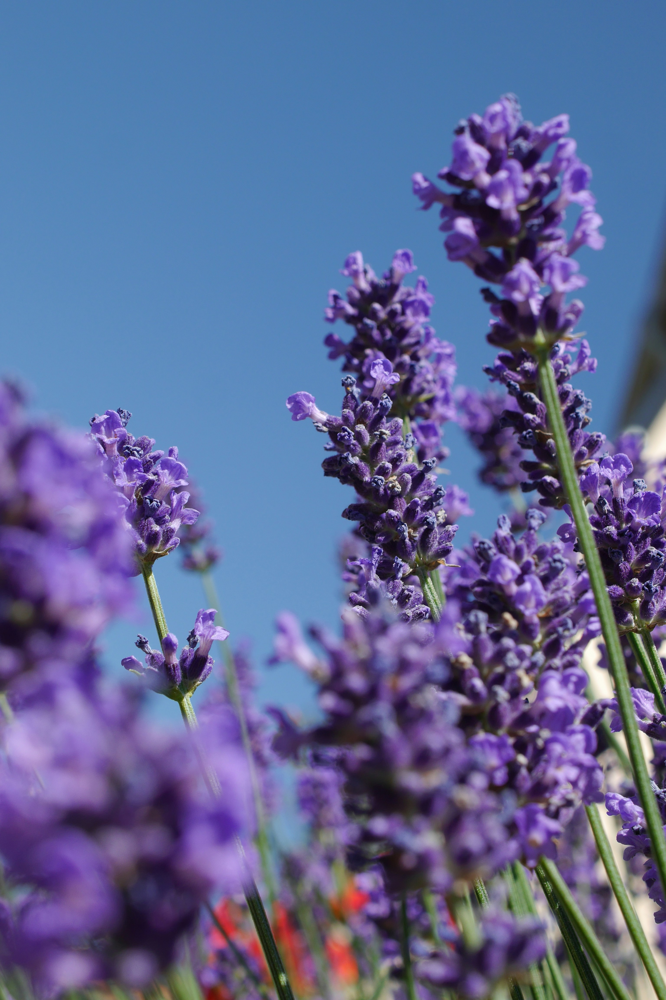

Lavender
Lavandula
Lavender is a fragrant flowering plant known for its beautiful purple blooms and calming aroma. It is commonly grown in gardens and containers.
Full Sun
Low to Moderate
Well Drained
Spring & Summer
How to Care for Lavender
Lavender grows best with plenty of sunlight, good drainage and careful watering.
Sunlight
Place lavender in a sunny location where it can receive several hours of direct sunlight each day.
Watering
Allow the soil to dry between waterings. Avoid keeping the roots constantly wet.
Soil
Use loose, well-drained soil. Lavender does not perform well in waterlogged soil.
Pruning
Light pruning after flowering can help maintain the plant's shape and encourage healthy growth.
How to Grow Lavender
Lavender is well suited to sunny gardens and containers when the soil drains freely.
Choose a Sunny Location
Select a location that receives plenty of direct sunlight throughout the day.
Prepare Well-Drained Soil
Use loose soil that allows excess water to drain away easily.
Plant Lavender
Plant lavender with enough space around it for good airflow and healthy growth.
Water Carefully
Water when needed but allow the soil to dry between waterings.
Lavender Fact 💜
Lavender is widely known for its distinctive fragrance and is commonly used in perfumes, soaps and other scented products.